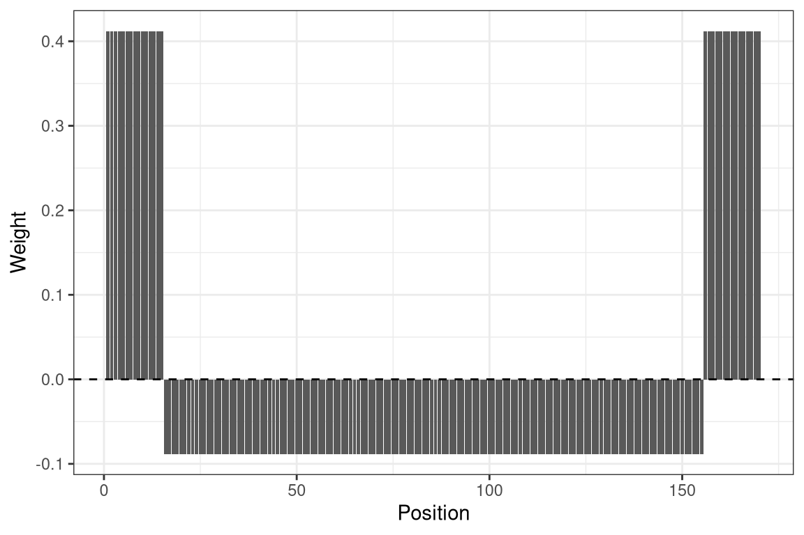
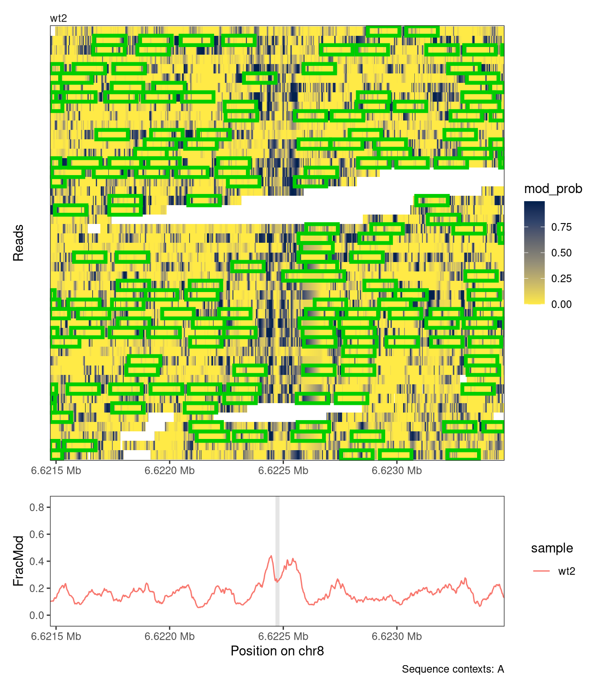
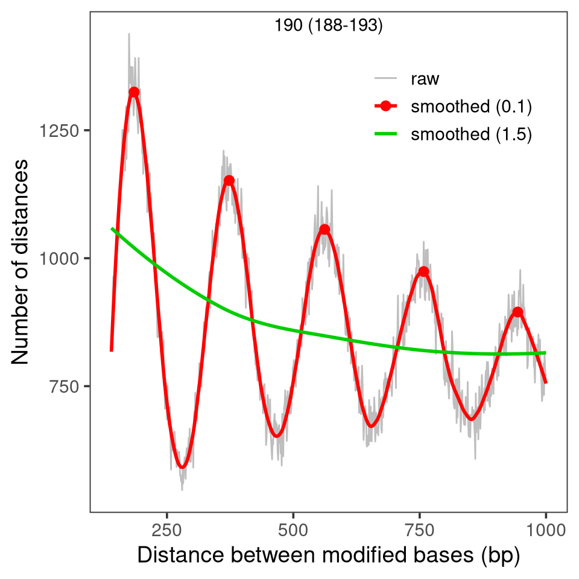
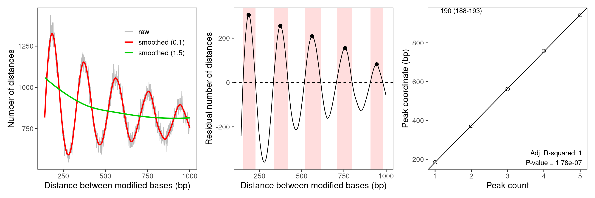
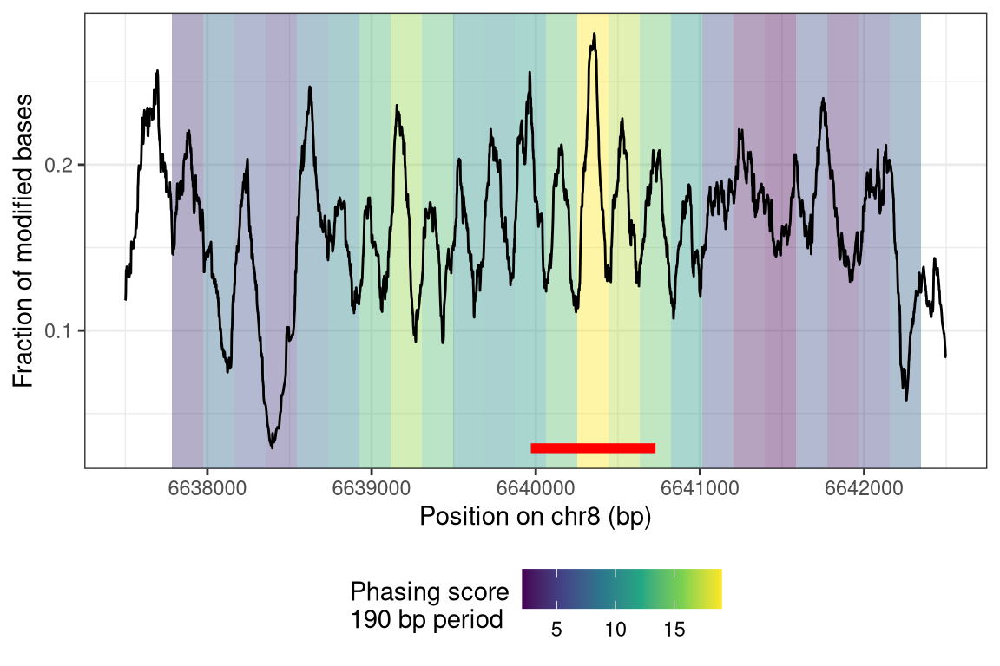

BSgenomeName <- "BSgenome.Mmusculus.GENCODE.GRCm39.gencodeM34"
library(footprintR)
library(ggplot2)
library(patchwork)
library(GenomicRanges)
library(SummarizedExperiment)
library(BSgenomeName, character.only = TRUE)
# Load genome
gnm <- get(BSgenomeName)
genome(gnm) <- "mm39"5 Nucleosome analyses
A prominent source of signal in single molecule footprinting data are nucleosomes that protect the DNA that is wound around the histones but leave the DNA between nucleosome particles, the linkers, accessible to modifications.
In this chapter, we illustrate how footprintR can be used to place single nucleosomes onto individual reads (see Section 5.3) or estimate the average distance between neighboring nucleosomes (Section 5.4).
5.1 Preparation
We first load the packages and the genome needed for these tasks.
5.2 Read data
Our data is obtained from modBam file from a wild-type sample, for which 6mA modification calling has been performed. We use the readModBam function to read data from an 2000-bp region around a CTCF binding site on chromosome 8 and store it in a SummarizedExperiment object. For more information about reading data with footprintR, see Chapter 2.
# Read data
ctcfsite <- as("chr8:6622465-6622483", "GRanges")
reg <- resize(ctcfsite, width = 2000, fix = "center")
se <- readModBam(
bamfiles = c(wt2 = "data/mESC_wt_6mA_rep2.bam"),
modbase = "a",
regions = reg,
seqinfo = seqinfo(gnm),
sequenceContextWidth = 1,
sequenceReference = gnm
)
# add summary-level assays
se <- flattenReadLevelAssay(se)5.3 Placing nucleosome footprints
The calcFootprintScores function uses a vector of weights to identify high-scoring regions on individual reads that show the modification pattern given in these weights. The score of a region on a read measures how well modification probabilities correlate with weights in the weight vector. High-scoring footprints that score above a provided threshold can be added to our se object using addFootprints, which will call calcFootprintScores internally.
In order to find nucleosomes, we construct a weight vector called wgt of a total length of 170 bp, consisting of a central 140 bp region in which we expect low modifications (the region protected by the nucleosome) flanked by two linker regions of 15 bp each in which we expect high modification. We adjust the weights in the flanks and central region such that the overall mean is close to zero:
# nucleosome footprint
wgt <- rep(c(0.5, -0.5, 0.5) * c(140/170, 30/170, 140/170), c(15, 140, 15))
mean(wgt)[1] -8.115253e-18ggplot(data.frame(Position = seq_along(wgt), Weight = wgt),
aes(Position, Weight)) +
geom_col() +
geom_hline(yintercept = 0, linetype = "dashed") +
theme_bw()
Now we can scan the reads for high-scoring footprints and add them to the colData of our SummarizedExperiment object, under a column name given by the name argument:
se <- addFootprints(se = se, wgt = wgt, thresh = 0.03, name = "nucl")ℹ calculating footprint scores✔ calculating footprint scores [518ms]ℹ segmenting footprint scores✔ segmenting footprint scores [782ms]The footprints are stored as a list with one element for each sample, containing an IRangesList. Its elements are the reads of that sample, and the ranges correspond to individual footprints:
se$nucl$wt2
IRangesList object of length 62:
$`wt2-2b63fef6-6d5c-4aa4-b6a1-aebd5390cc83`
IRanges object with 37 ranges and 0 metadata columns:
start end width
<integer> <integer> <integer>
[1] 6610367 6610506 140
[2] 6610900 6611039 140
[3] 6611097 6611236 140
[4] 6611677 6611816 140
[5] 6612665 6612804 140
... ... ... ...
[33] 6622587 6622726 140
[34] 6622762 6622901 140
[35] 6623311 6623450 140
[36] 6623890 6624029 140
[37] 6624088 6624227 140
...
<61 more elements>The nucleosome footprints can be visualized using plotRegion:
plotRegion(se, region = reg,
tracks = list(list(trackData="mod_prob", trackType="Heatmap",
interpolate = TRUE,
footprintColumns = "nucl",
footprintColors = c(nucl = "green3"),
orderReads = "squish"),
list(trackData = "FracMod", trackType = "Smooth",
smoothMethod="rollingMean", windowSize=41,
highlightRegions = ctcfsite)),
sequenceContext = "A") +
patchwork::plot_layout(heights = c(2, 0.6))
5.4 Estimating nucleosome repeat length
Placing of individual nucleosomes in principle allows also measuring their average distance, the nucleosome repeat length (NRL). This measure can also be obtained without placing of nucleosomes, from the distribution of distances between modified bases in which multiples of the NRL are over-represented. This idea is related to the phasogram analysis described by Valouev et al. (2011).
In footprintR, this analysis can be performed by first calculating the distribution of distances between modified bases using calcModbaseSpacing:
moddist <- calcModbaseSpacing(se)
str(moddist)List of 1
$ wt2: Named num [1:1000] 3513 2262 1789 1296 1176 ...
..- attr(*, "names")= chr [1:1000] "1" "2" "3" "4" ...From this distribution, which was obtained from just 62 reads, we can accurately estimate the NRL using estimateNRL:
res <- estimateNRL(x = moddist$wt2)
res[1:2]$nrl
[1] 190.3
$nrl.CI95
2.5 % 97.5 %
187.6821 192.9179 Alternatively, the distance distribution can also be visualized together with an estimate of the NRL using plotModbaseSpacing, either as a summary plot:
plotModbaseSpacing(x = moddist$wt2)
… or as a set of three plots that illustrate the different steps of the estimation:
plotModbaseSpacing(x = moddist$wt2, detailedPlots = TRUE)
5.5 Quantifying nucleosome phasing
Nucleosomes that occupy similar positions across reads are called phased and can result for example from a sequence-specific DNA binding protein that constrains their movement along the DNA. Genomic regions with phased nucleosomes can be identified on the summary-level data by phasingScoreFourier, which calculates the strength of a periodic component in the summary-level data corresponding to the expected period of nucleosomes (see Section 5.4 for how that period can be estimated).
We start such an analysis by first reading summary-level data for a larger genomic region, in which we want to calculate phasing scores:
reg <- GRanges("chr8", IRanges(6637500, 6642500))
se <- readModBam(
bamfiles = c(wt2 = "data/mESC_wt_6mA_rep2.bam"),
modbase = "a",
regions = reg,
level = "summary",
trim = TRUE,
seqinfo = seqinfo(gnm),
sequenceContextWidth = 1,
sequenceReference = gnm
)Next, we construct windowgr, a GRanges objects defining the windows in reg for which we want to calculate a nucleosome phasing score:
windowStep <- 190
windowSize <- 4 * windowStep
s <- seq(start(reg), end(reg) - (windowSize - windowStep) + 1, by = windowStep)
windowgr <- GRanges(seqnames = seqnames(reg),
ranges = IRanges(start = s, width = windowSize))Finally, we calculate phasing socres for the windows in windowgr. The windowSize and the value of the numCoef argument define the period of interest \(poi = windowSize / (numCoef - 1)\) (here: 190 bp, see phasingScoreFourier for details):
seFourier <- phasingScoreFourier(se = se, gr = windowgr, numCoef = 5)We can plot the window scores together with the fraction of modification. Note that the sequential windows for which the phasing score was calculated are overlapping (the window with the maximal phasing score is indicated by the red line below):
# get plotting data using plotRegion
p <- plotRegion(se, region = reg,
tracks = list(list(trackData = "FracMod", trackType = "Smooth",
smoothMethod = "rollingMean", windowSize = 101)))
pd <- p$layers[[1]]$data
# get phasing scores
pd2 <- as.data.frame(rowRanges(seFourier))
pd2$position <- mid(rowRanges(seFourier))
pd2$phasingScoreAbs <- assay(seFourier, "phasingScoreAbs")[, "wt2"]
# visualize
ggplot(mapping = aes(x = position)) +
geom_tile(data = pd2,
mapping = aes(y = mean(pd$value_smooth), fill = phasingScoreAbs),
width = windowStep, height = Inf, alpha = 0.4) +
scale_fill_viridis_c() +
geom_segment(data = pd2[which.max(pd2$phasingScoreAbs), , drop = FALSE],
inherit.aes = FALSE,
mapping = aes(x = start, xend = end, y = min(pd$value_smooth)),
colour = "red", linewidth = 2) +
geom_line(data = pd,
mapping = aes(y = value_smooth)) +
ylim(range(pd$value_smooth)) +
labs(x = paste0("Position on ", seqnames(reg), " (bp)"),
y = "Fraction of modified bases",
fill = paste0("Phasing score\n", windowStep, " bp period")) +
theme_bw() +
theme(legend.position = "bottom")